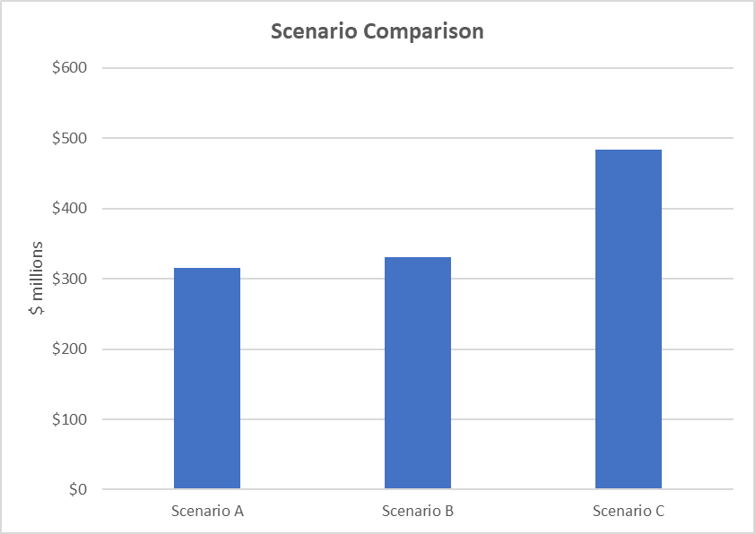
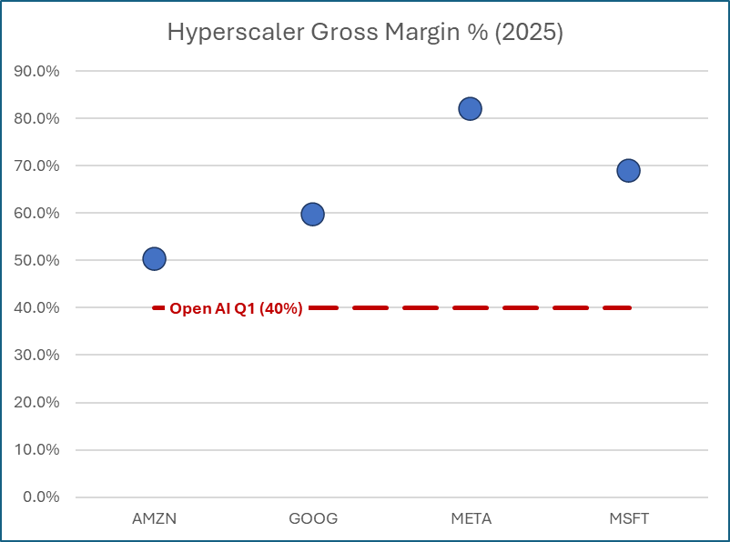
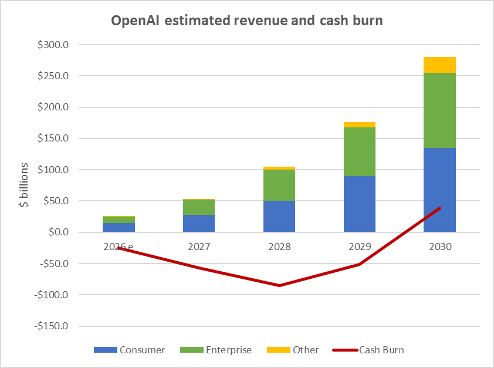

A60-Second Verdict
This email is investment-relevant because it turns OpenAI disclosure into a framework for monitoring the AI infrastructure cycle.
- Main insight: OpenAI's revenue, gross margin, cash burn, and capex commitments determine how much compute buildout it can realistically support.
- Public-market link: ORCL and CRWV are the most direct public names in the note, but the signal also affects hyperscalers and infrastructure suppliers.
- Recommended next step: create an OpenAI disclosure watch item. Do not turn this into a buy/sell action without valuation and exposure checks.
Processor Decision
BSignal Scorecard
Maturity Sliders
CBasic Information
| Field | Value |
|---|---|
| Title | Emerging Disclosure: OpenAI, Price Discovery, and the Path to the S-1 |
| Author / sender | Dauvin Peterson, 22V Research |
| Received | 2026-06-18 19:22:57 Europe/Zurich |
| Message ID | <xbdR7rUFQPC8VUhpUGJNWg@geopod-ismtpd-19> |
| Processed content | Email body plus embedded scenario charts. |
| Not processed | Canonical website/PDF version and external source links. |
DContent Extraction
| Concept | Plain-English Explanation | Why It Matters |
|---|---|---|
| Gross margin | Money left after direct service costs. If margin is low, more revenue or outside capital is needed. | Determines whether OpenAI can fund very large compute commitments. |
| Capex | Capital expenditure: long-term infrastructure spending such as data centers and compute. | Large capex supports suppliers, but only if the customer can fund it. |
| S-1 | Formal IPO registration document in the US. | Would improve price discovery across the AI stack. |
EContent Evaluation
| Dimension | Assessment | RAG |
|---|---|---|
| Plausibility | The logic is coherent: margins and funding capacity constrain capex commitments. | Green |
| Evidence strength | Useful scenario evidence, but private-company disclosure is incomplete. | Amber |
| Decision readiness | Ready for monitoring and thesis impact; not ready for buy/sell labels. | Amber |
FInvestment Impact
| Area | Impact | Confirmation Score | Implication |
|---|---|---|---|
| AI infrastructure thesis | Strengthens need to track funding capacity, not only demand. | 7/10 | Create OpenAI disclosure watch. |
| ORCL | Potential commitment beneficiary, but exposed to OpenAI funding durability. | 6/10 | Watch valuation, backlog sensitivity, and counterparty risk. |
| CRWV | Direct compute-demand exposure, but funding and customer concentration matter. | 6/10 | Watch exposure before action. |
| Hyperscalers | Useful margin comparables rather than direct recommendations. | 5/10 | Use as context for OpenAI margin path. |
GConcrete Actions
Track revenue, gross margin, cash burn, capex commitments, token pricing, and S-1 timing.
They are the clearest public names linked to the commitment discussion.
Live price, valuation, portfolio exposure, and counterparty-risk checks are still missing.
HDetailed Appendix For Understanding
This appendix is intentionally detailed. The paragraph headings summarize the paragraph, so Rene can scan the section quickly and still get the substance without reading the original email end to end.
Chart Pack



The OpenAI note matters because AI infrastructure now depends on funding capacity, not only demand excitement.
Many AI infrastructure investments assume that demand for compute will continue growing. The 22V note adds a second question: can the biggest buyers finance the required infrastructure? If OpenAI cannot generate enough gross profit or funding, some compute commitments may be delayed, resized, or require more capital.
Gross margin is the key bridge from private OpenAI economics to public AI beneficiaries.
Gross margin is the percentage of revenue left after direct costs. If OpenAI earns high gross margins, it has more internal capacity to fund compute. If margins stay low, it needs more outside capital or lower spending.
The S-1 is important because it could replace speculation with real numbers.
An S-1 filing would likely reveal more detail about revenue, cost structure, margins, cash burn, commitments, and risk factors. That would improve the market's ability to value OpenAI and companies tied to it.
ORCL and CRWV are beneficiaries only if the commitments are durable.
The public-market relevance comes from compute commitments. Those commitments are valuable if the buyer can keep funding them. The investment question is not only demand; it is also duration, margins, financing, and customer concentration.
ISource Handling
Recorded from Apple Mail mailbox Research Signals - New. The email was moved to Research Signals - Processed after signal capture. Obsidian note created at DragonShield Research Obsidian/01 Signals/2026/2026-06/2026-06-18 22V - OpenAI Disclosure Path To S-1.md. No live market-price validation was performed.